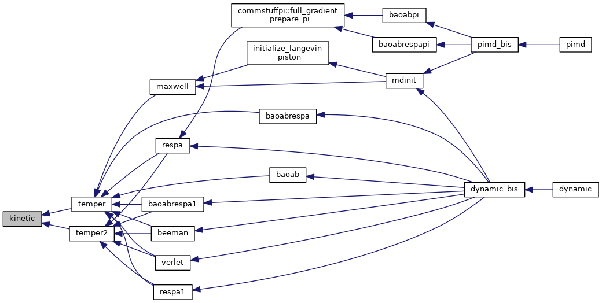

|
Tinker-HP v1.3
|
|
Tinker-HP v1.3
|
Go to the source code of this file.
Functions/Subroutines | |
| subroutine | kinetic (eksum, ekin, temp) |
| computes the total kinetic energy and kinetic energy contributions to the pressure tensor by summing over velocities More... | |
| subroutine kinetic | ( | real*8 | eksum, |
| real*8, dimension(3,3) | ekin, | ||
| real*8 | temp | ||
| ) |
computes the total kinetic energy and kinetic energy contributions to the pressure tensor by summing over velocities
| no | params |
Definition at line 21 of file kinetic.f90.
Referenced by temper(), and temper2().

 1.8.5
1.8.5